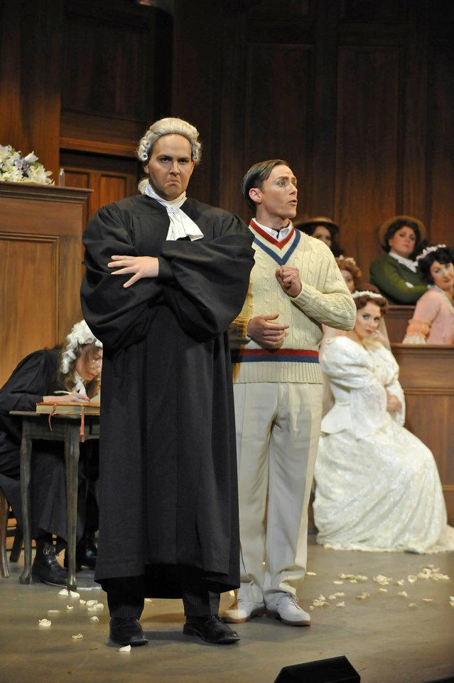
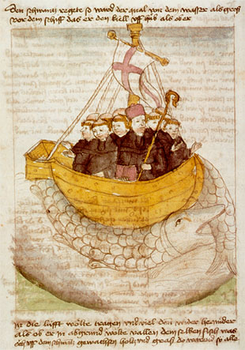

Welcome to BRENDANVOYAGE.
A simple cyber way-station for updates to my performing schedule and notes on recent ocean, land, culture, and genre crossings.

Navigatio Sancti Brendani
In the sixth century, Saint Brendan the Navigator sailed the northern seas. Legend holds that he and his mission may have reached the New World, over nine centuries before Columbus.

Inspired by that adventure, I continue my own voyage of discovery into music, languages, movement, and highly physical drama, as I strive for the truest, most fully embodied characterization that I can bring to the live stage.
"Vocally, I was particularly impressed by...Brendan Daly as Lechmere in the opening scene, the one place where Britten allows us a sense of fun and joy--one could almost understand why one would want to be a soldier by seeing the pure joy Lechmere brings to brandishing a sword."
- Boston Musical Intelligencer